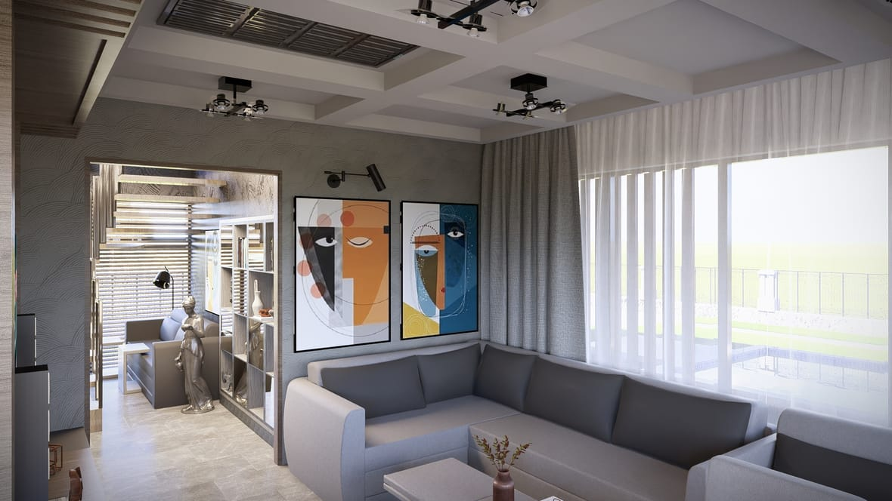
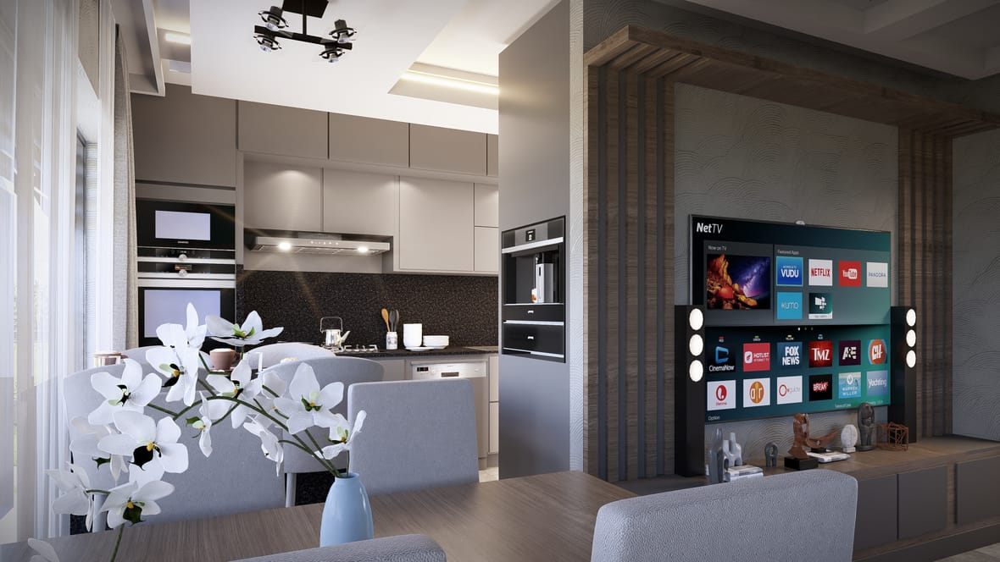
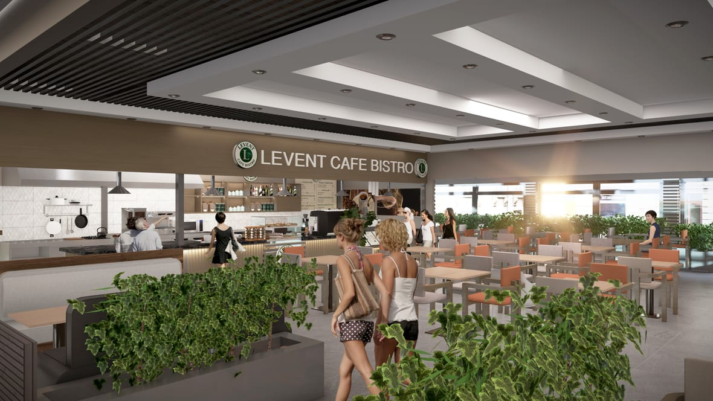

Tadilat, inşaatın en çok yanlış anlaşılan kalemidir. Aynı daire için iki firmadan iki kat fark teklif gelebilir — çünkü kimse aynı işi kastetmemektedir. Mimarlık kökenli çalışıyoruz: işe başlamadan önce mekânın planını çıkarır, üç boyutlu görselleştirmesini hazırlar ve size sunarız. Kararları duvar yıkılmadan önce birlikte veririz.
Tadilatta tek bir m² rakamı vermek kolaydır; sorun, o rakamın sahada karşılığı olmamasıdır.
100 m² bir dairede sadece boya ve zemin yapmakla; tesisatı, elektriği, ıslak hacimleri ve doğramayı yenilemek arasında kat kat fark vardır. İkisi de "100 m² tadilat" diye anılır. Bu yüzden m² fiyatı, kapsamı bilinmeden anlamsız bir sayıdır.
Seramik, armatür, mutfak dolabı, doğrama ve zemin kaplamasında sınıf farkı toplam maliyeti belirgin şekilde değiştirir. Aynı işçilik, farklı malzeme ile bambaşka bir bütçedir. Teklifte marka ve model yazmıyorsa o teklif karşılaştırılabilir değildir.
Eski binalarda çürümüş tesisat, bozuk şap ya da önceki müdahalelerin izleri ancak kaplamalar söküldüğünde görünür. Keşif bu riski baştan tahmin etmek içindir; keşifsiz verilen fiyat, sürprizi müşteriye fatura eder.
En ucuz teklif genellikle daha az iş içerir: söküm ve moloz yoktur, yalıtım yoktur, tesisat yenilenmez. İş ilerledikçe bunlar "ek iş" olarak geri gelir. Karşılaştırmayı fiyata değil kalem listesine göre yapın.
Bizim yöntemimiz: ücretsiz keşif yapılır, yapının durumu yerinde görülür, ardından kalem kalem yazılı teklif iletilir — söküm ve moloz, tesisat, elektrik, su yalıtımı, malzeme sınıfı ve teslim ayrı ayrı yazılır. Böylece neye ne ödediğinizi baştan bilirsiniz ve iş ortasında kapsam tartışması çıkmaz.
Tadilatta en büyük tereddüt, sonucun nasıl görüneceğini kestirememektir. Biz mimarlık kökenli çalışıyoruz: işe başlamadan önce mekânın planını çıkarır, üç boyutlu görselleştirmesini hazırlar ve size sunarız. Malzeme, renk ve yerleşim kararlarını duvar yıkılmadan önce birlikte veririz.



Teklif alırken ilk netleştirilmesi gereken şey kapsamdır. Aşağıdaki dört başlık, sahada en sık karşılaştığımız taleplerdir.
Daire ya da müstakil yapının tümüyle yenilenmesi. Mevcut kaplamaların sökümü, tesisat ve elektriğin yenilenmesi, ıslak hacimlerin komple değişimi, zemin, boya ve doğrama işleri.
Süre: 100 m² daire için tipik olarak 6–10 hafta.
Kritik nokta: Tesisat ve elektrik yenilenmiyorsa bu komple tadilat değildir; birkaç yıl sonra aynı duvarı ikinci kez açarsınız.
Tadilatın en yoğun ve en teknik bölümü. Su tesisatı, gider eğimi, su yalıtımı, seramik ve mobilya işleri bir arada yürür.
Süre: Banyo 2–3 hafta, mutfak 3–4 hafta.
Kritik nokta: Su yalıtımı yapılmadan seramik döşenen banyo, alt komşuya sızıntı olarak geri döner. Yalıtım kalemi teklifte açıkça yazmıyorsa sorun.
Yapısal müdahale olmadan görünümün yenilenmesi: alçı tamiri, saten ve boya, laminat veya parke, süpürgelik, kapı-pencere bakımı.
Süre: 100 m² için 1–2 hafta.
Kritik nokta: Zemin altındaki şap düzgün değilse laminat kısa sürede oynar. Şap kontrolü olmadan verilen zemin fiyatı eksik fiyattır.
Ticari mekânlarda bölme, aydınlatma, zemin, cephe ve vitrin işleri. Konuttan farkı: süre baskısı ve mesai dışı çalışma gerekliliği.
Süre: Kapsama göre 3–8 hafta.
Kritik nokta: İşletme açıkken tadilat yapılacaksa bu baştan planlanmalı; sonradan istenen vardiya düzeni maliyeti değiştirir.
Aynı daire için gelen iki teklif arasında iki kat fark varsa, sebebi genellikle fiyat değil kapsamdır. Farkın nereden çıktığını gösteren altı kalem:
Tadilatta en çok sorun, sıranın bozulmasından çıkar. Doğru sıra şudur:
Tadilat ne kadar sürer?
Tadilat sırasında evde oturulabilir mi?
Teklifte nelere bakmalıyım?
Kombi, tesisat ve elektrik de yenilenmeli mi?
Ücretsiz keşif neyi kapsıyor?
Çelik ev, kat karşılığı, havuz ya da mimari proje — adınızı ve telefonunuzu bırakın, size uygun çözümü konuşalım.